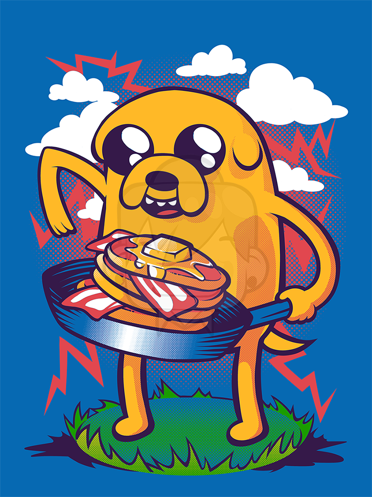

Jake the dog's infamous bacon pancakes

Description
From the mind of Jake the dog came this innovative and unusual recipe.
The sweetness of the pancake and the
saltiness of the bacon. Who knew these flavours would intertwine with each other
so effortlessly?
Ingredients
- 1 1/2 cup of All purpose flour
- 2 tbsp Sugar
- 1 tbsp Baking powder
- 1/2 tbsp Salt
- 295 ml Milk
- 1 large Egg
- 4 tbsp unsalted Butter
- 1 tsp Vanilla extract
- Bacon of your liking
Steps
For Bacon
- Heat up 1 tbsp of cooking oil in a pan over medium heat.
- Add your bacon and fry it until nice and crispy.
For Pancakes
- Whisk flour, sugar, baking powder, and the salt in a medium bowl.
- Warm milk in the microwave or on top of the stove until lukewarm, not hot.
You should be able to keep
your
finger submerged for 10 seconds.
- Whisk milk, egg, melted butter, and vanilla extract until combined.
(By warming the milk slightly, the
melted butter mixes into the milk instead of turning into small lumps).
- Heat a large skillet (or use griddle) over medium heat.
The pan is ready if when you splatter a little
water
onto the pan surface, the water dances around the pan and eventually evaporates.
- Make a well in the center of the flour mixture, pour milk mixture into the well and use a fork to stir until
you no longer see clumps of flour.
It is okay if the batter has small lumps – it is important not to
over-mix the batter.
- Lightly brush skillet with melted butter (this is optional if you have a high-quality non-stick pan). Use a
1/4-cup measuring cup to spoon batter onto the skillet.
Gently spread the batter into a 4-inch circle
and
add your crispy bacon on top of pancake mixture.
- When edges look dry, and bubbles start to appear and pop on the top surfaces of the pancake, turn over.
This
takes about 2 minutes. Once flipped, cook another 1 to 2 minutes or until lightly browned and cooked in the
middle.